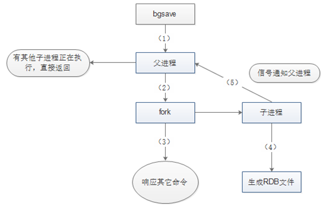
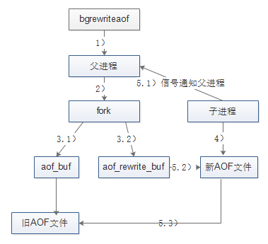

持久化是Redis HA的一种，主要实现数据备份，与
主从复制相比强调的是由内存到硬盘的备份。
本文总结Redis的持久化策略(RDB和AOF)，各自的文件格式、控制参数、触发机制、实现方式、实现原理、执行流程、优缺点。
RDB快照
RDB文件格式
- REDIS：常量，保存着”REDIS”5个字符。
- db_version：RDB文件的版本号，注意不是Redis的版本号。
- SELECTDB 0 pairs：
- SELECTDB是一个常量
- 0：0号数据库
- pairs：存储了具体的键值对信息
- EOF：常量，标志RDB文件正文内容结束。
- check_sum：前面所有内容的校验和
RDB控制参数
rdbcompression:是否开启RDB文件压缩rdbchecksum:是否开启RDB文件的校验，在写入文件和读取文件时都起作用。关闭checksum在写入文件和启动文件时大约能带来10%的性能提升， 但是数据损坏时无法发现save m n：m秒内写n次则触发快照,bgsave自动触发的条件stop-writes-on-bgsave-error yes- yes:则当硬盘出现问题时，可以及时发现，避免数据的大量丢失；
- no:Redis无视bgsave的错误继续执行写命令，当对Redis服务器的系统(尤其是硬盘)使用了监控时，该选项考虑设置为no
RDB触发机制
save的默认触发条件
- 1分钟写1万次
- 5分钟写10次
- 15分钟写1次
从节点同步时
在主从复制场景下，如果从节点执行全量复制操作， 则主节点会执行bgsave命令，并将rdb文件发送给从节点
shutdown时
执行shutdown命令时，自动执行rdb持久化
最佳实践
BGSAVE 对于IO的性能影响比较大， 如何解决保证数据持久化同时解决性能问题？
通常的设计思路就是利用「Replication」机制来解决：
- master不开启RDB日志和AOF日志，来保证master的读写性能。
- slave则开启rdb和aof来进行持久化，保证数据的持久性，
RDB实现方式
save命令
- 阻塞创建快照
- 线上环境要杜绝save的使用
bgsave命令
- 异步创建快照:只有fork子进程时会阻塞服务器
10GB内fork进程一般不超过百毫秒级
RDB实现原理
Redis的save m n，是通过serverCron函数、dirty计数器、和lastsave时间戳来实现的。
- serverCron周期性操作函数
- dirty计数器：服务器状态进行了多少次增删改，bgsave后清零
- lastsave时间戳：上一次成功执行save/bgsave的时间
save m n的原理如下：
每隔100ms，执行serverCron函数；在serverCron函数中，遍历save m n配置的保存条件，只要有一个条件满足，就进行bgsave。
对于每一个save m n条件，只有下面两条同时满足时才算满足：
- 当前时间-lastsave > m
- dirty >= n
RDB执行流程

Redis父进程首先判断：当前是否在执行save，或bgsave/bgrewriteaof（后面会详细介绍该命令）的子进程，如果在执行则bgsave命令直接返回。
bgsave/bgrewriteaof 的子进程不能同时执行，主要是基于性能方面的考虑：两个并发的子进程同时执行大量的磁盘写操作，可能引起严重的性能问题。
父进程执行fork操作创建子进程，这个过程中父进程是阻塞的，Redis不能执行来自客户端的任何命令
- 父进程fork后，bgsave命令返回”Background saving started”信息并不再阻塞父进程，并可以响应其他命令
- 子进程创建RDB文件，根据父进程内存快照生成临时快照文件，完成后对原有文件进行原子替换
- 子进程发送信号给父进程表示完成，父进程更新统计信息
RDB优缺点
优点
- 可配置不同的备份周期来满足灵活的备份需求
- fork子进程备份，最大化redis性能
- 便于大规模数据备份恢复
- 与AOF相比，重启时数据内存恢复更快
缺点
- fork子进程备份，内存数据量大时候性能受影响
- 备份时宕机，会导致数据丢失
AOF日志
文件格式
日志内容和redis命令一致，可读性强
select db默认写入
控制参数
appendonly：是否开启，yes/noappendfilename "appendonly.aof":aof备份文件名appendfsync everysec文件缓冲同步到磁盘的频率- always 每执行一个命令保存一次
- everyseconds 每一秒钟保存一次
- no 不保存
重写rewrite参数
no-appendfsync-on-rewrite no: AOF重写期间是否禁止fsyncauto-aof-rewrite-percentage 100:自动重写百分比, 0禁用rewriteauto-aof-rewrite-min-size 64mb：自动重写最小文件
aof加载
aof-load-truncated yes: 如果AOF文件结尾损坏，Redis启动时是否仍载入AOF文件- yes: 自动修复aof尾部异常
- no: redis-check-aof -fix 手动修复aof文件
aof-use-rdb-preamble yes:结合rdb加载aof
触发机制
实现方式
实现原理
执行流程
命令追加(append)
将Redis的写命令追加到缓冲区aof_buf
文件写入(write)和文件同步(sync)
根据不同的同步策略将aof_buf中的内容同步到硬盘；
AOF缓存区的同步文件策略由参数appendfsync控制
- no:命令写入aof_buf后调用系统write操作，不对AOF文件做fsync同步； 同步由操作系统负责，通常同步周期为30秒。
- 存在问题:这种情况下，文件同步的时间不可控， 且缓冲区中堆积的数据会很多，数据安全性无法保证。
- always:命令写入aof_buf后立即调用系统fsync操作同步到AOF文件，fsync完成后线程返回。 这种情况下，每次有写命令都要同步到AOF文件，硬盘IO成为性能瓶颈，
- 存在问题:Redis只能支持大约几百TPS写入，严重降低了Redis的性能； 即便是使用固态硬盘（SSD），每秒大约也只能处理几万个命令， 而且会大大降低SSD的寿命。
- everysec:命令写入aof_buf后调用系统write操作，write完成后线程返回； fsync同步文件操作由专门的线程每秒调用一次。
- everysec是前述两种策略的折中，是性能和数据安全性的平衡， 因此是Redis的默认配置，也是我们推荐的配置。
everysec刷盘机制
存在问题
- 如果硬盘负载过高，那么fsync操作可能会超过1s；
- 如果Redis主线程持续高速向aof_buf写入命令，硬盘的负载可能会越来越大，IO资源消耗更快
- 如果此时Redis进程异常退出，丢失的数据也会越来越多，可能远超过1s。
处理策略
- 主线程每次进行AOF会对比上次fsync成功的时间；
- 如果距上次不到2s，主线程直接返回；
- 如果超过2s，则主线程阻塞直到fsync同步完成。
AOF追加阻塞问题定位的方法
- 监控info Persistence中的
aof_delayed_fsync：当AOF追加阻塞发生时（即主线程等待fsync而阻塞），该指标累加。- AOF阻塞时的Redis日志：Asynchronous AOF fsync is taking too long (disk is busy?). Writing the AOF buffer without waiting for fsync to complete, this may slow down Redis.
- 如果AOF追加阻塞频繁发生，说明系统的硬盘负载太大；可通过IO监控分析工具对系统的IO负载进行分析，如iostat（系统级io）、iotop（io版的top）、pidstat等，如果是存储介质瓶颈可以考虑更换IO速度更快的硬盘。
处理结果
如果系统硬盘负载过大导致fsync速度太慢，会导致Redis主线程的阻塞；
使用everysec配置，AOF最多可能丢失2s的数据，而不是1s。
文件重写(rewrite)
rewrite出现的背景
随着时间流逝，Redis服务器执行的写命令越来越多，AOF文件也会越来越大；
过大的AOF文件不仅会影响服务器的正常运行，也会导致数据恢复需要的时间过长。
rwrite的作用
- 减少文件占用的空间
- 加快恢复速度
rewrite为什么能压缩aof日志
- 过期的数据不再写入文件
- 无效的命令不再写入文件
- 有些数据被重复设值(set mykey v1, set mykey v2)
- 有些数据被删除了(sadd myset v1, del myset)
- 多条命令可以合并为一个
- 如sadd myset v1, sadd myset v2, sadd myset v3 可以合并为sadd myset v1 v2 v3,不过为了防止单条命令过大造成客户端缓冲区溢出，对于list、set、hash、zset类型的key，并不一定只使用一条命令； 而是以某个常量为界将命令拆分为多条。
- 这个常量在redis.h/REDIS_AOF_REWRITE_ITEMS_PER_CMD中定义，不可更改， 3.0版本中值是64。
rewrite注意事项
- AOF重写是把Redis进程内的数据转化为写命令，同步到新的AOF文件；不会对旧的AOF文件进行任何读取、写入操作!
- 对于AOF持久化来说，文件重写虽然是强烈推荐的，但并不是必须的；即使没有文件重写，数据也可以被持久化并在Redis启动的时候导入；
- 在一些实现中，会关闭自动的文件重写，然后通过定时任务在每天的某一时刻定时执行。
rewrite的触发
- 手动触发：bgrewriteaof
- 自动触发
- 根据
auto-aof-rewrite-min-size和auto-aof-rewrite-percentage参数， 以及aof_current_size和aof_base_size状态确定触发时机。 - auto-aof-rewrite-min-size 执行AOF重写时，文件的最小体积默认值为64MB
- auto-aof-rewrite-percentage 执行AOF重写时，当前AOF大小(即aof_current_size)和上一次重写时AOF大小(aof_base_size)的比值，默认值为100。
- 根据
rewrite重写流程

- Redis父进程首先判断当前是否存在正在执行
bgsave/bgrewriteaof的子进程，- 如果存在则
bgrewriteaof命令直接返回， - 如果存在
bgsave命令则等bgsave执行完成后再执行。这个主要是基于性能方面的考虑。
- 如果存在则
- 父进程执行fork操作创建子进程，这个过程中父进程是阻塞的。
- 父进程fork后，bgrewriteaof命令返回”Background append only file rewrite started”信息并不再阻塞父进程，并可以响应其他命令,Redis的所有写命令依然写入AOF缓冲区，并根据appendfsync策略同步到硬盘，保证原有AOF机制的正确(3.1)。
- 由于fork操作使用
写时复制技术，子进程只能共享fork操作时的内存数据。由于父进程依然在响应命令，因此Redis使用AOF重写缓冲区(图中的aof_rewrite_buf)保存这部分数据，防止新AOF文件生成期间丢失这部分数据。也就是说，bgrewriteaof执行期间，Redis的写命令同时追加到aof_buf和aof_rewirte_buf两个缓冲区(3.2)。
- 由于fork操作使用
- 子进程根据内存快照，按照命令合并规则写入到新的AOF文件。
- 子进程写完新的AOF文件后，向父进程发信号，父进程更新统计信息，具体可以通过
info persistence查看(5.1)。 - 父进程把AOF重写缓冲区的数据写入到新的AOF文件，这样就保证了新AOF文件所保存的数据库状态和服务器当前状态一致(5.2)。
- 使用新的AOF文件替换老文件，完成AOF重写(5.3)。
注意
- 重写由父进程fork子进程进行
- 重写期间Redis执行的写命令，需要追加到新的AOF文件中， 为此Redis引入了
aof_rewrite_buf缓存
优缺点
优点
- 更安全的持久化， 更多样化的fsync策略
- appendOnlyLog保证日志数据的安全性， 且能修复尾部异常的日志数据
- 自带日志重写机制，日志文件过大时， 会根据当前数据重写生成一个更小的日志文件
- 日志内容和redis命令一致，可读性强， 特殊情况可修改后再恢复数据
缺点
- AOF文件比RDB文件更占用磁盘空间
- AOF的sync策略为everyseconds或always时性能比RDB差
- 没有RDB稳健
关闭持久化
save “”
appendonly no
如何选择
关闭持久化
- Redis中的数据完全丢弃也没有关系
- 如Redis完全用作DB层数据的cache
使用RDB
- 单机环境下，可以接受十几分钟或更多的数据丢失
- 允许服务器宕机时一段时间内的数据丢失
使用AOF
- 只能接受秒级别的数据丢失
同时开启RDB和AOF持久化
redis表示未来可能会合并RDB和AOF
master节点
完全关闭持久化
slave节点
功能
- 实现数据的热备
- 读写分离分担Redis读请求
- master宕掉后继续提供服务
关闭RDB，开启AOF
- 定时对AOF文件进行备份
- 关闭AOF的自动重写， 添加定时任务，在每天Redis闲时（如凌晨12点）调用
bgrewriteaof。
异地灾备
主从集群灾备
- rdb：可以定时在master上执行
bgsave， 然后将RDB文件通过scp拷贝到远程机器，一般来说，由于RDB文件文件小、恢复快，因此灾难恢复常用RDB文件； - aof：在slave上执行
bgrewriteaof重写AOF文件后，将AOF文件拷贝到远程机器上。
单机灾备
可以定时将RDB文件或重写后的AOF文件，通过scp拷贝到远程机器，如阿里云、AWS等
备份频率
异地备份的频率根据数据安全性的需要及其他条件来确定，但最好不要低于一天一次。